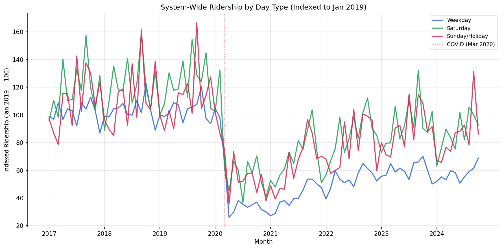
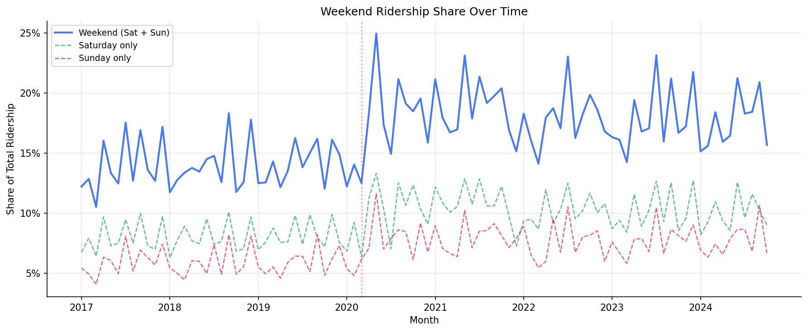
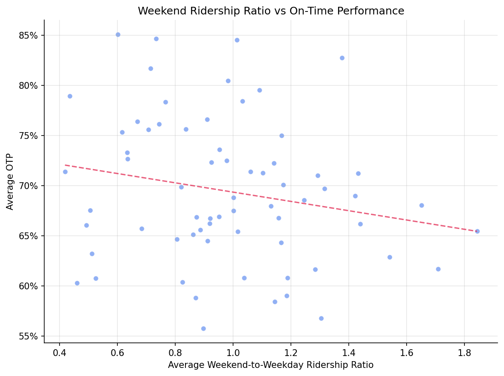

Analysis
24 - Weekday vs Weekend Ridership Trends
Ridership and External Factors
Coverage: 2017-01 to 2025-11 (from otp_monthly, ridership_monthly).
Built 2026-03-20 19:21 UTC · Commit e3fc8c3
Page Navigation
Analysis Navigation
Data Provenance
flowchart LR
24_daytype_ridership_trends(["24 - Weekday vs Weekend Ridership Trends"])
t_otp_monthly[("otp_monthly")] --> 24_daytype_ridership_trends
01_data_ingestion[["Data Ingestion"]] --> t_otp_monthly
t_ridership_monthly[("ridership_monthly")] --> 24_daytype_ridership_trends
01_data_ingestion[["Data Ingestion"]] --> t_ridership_monthly
d1_24_daytype_ridership_trends(("polars (lib)")) --> 24_daytype_ridership_trends
d2_24_daytype_ridership_trends(("scipy (lib)")) --> 24_daytype_ridership_trends
classDef page fill:#dbeafe,stroke:#1d4ed8,color:#1e3a8a,stroke-width:2px;
classDef table fill:#ecfeff,stroke:#0e7490,color:#164e63;
classDef dep fill:#fff7ed,stroke:#c2410c,color:#7c2d12,stroke-dasharray: 4 2;
classDef file fill:#eef2ff,stroke:#6366f1,color:#3730a3;
classDef api fill:#f0fdf4,stroke:#16a34a,color:#14532d;
classDef pipeline fill:#f5f3ff,stroke:#7c3aed,color:#4c1d95;
class 24_daytype_ridership_trends page;
class t_otp_monthly,t_ridership_monthly table;
class d1_24_daytype_ridership_trends,d2_24_daytype_ridership_trends dep;
class 01_data_ingestion pipeline;
Findings
Findings: Weekday vs Weekend Ridership Trends
Summary
Weekend ridership has recovered far more strongly than weekday ridership since COVID. As of October 2024, Saturday service is at 90.7% of its January 2019 level while weekday service is at just 64.5%. Weekend's share of total ridership rose from 13.6% pre-COVID to 17.8% post-2023, a +4.2 pp structural shift. The weekend-to-weekday ridership ratio does not significantly correlate with route-level OTP (Pearson r = -0.20, p = 0.097).
Key Numbers
- Weekday recovery (Oct 2024 vs Jan 2019): 64.5% -- weekday ridership has not recovered
- Saturday recovery: 90.7% -- nearly fully recovered
- Sunday recovery: 83.9%
- Weekend share pre-COVID (Jan 2019 -- Feb 2020): 13.6%
- Weekend share post-2023 (Jan 2023 -- Oct 2024): 17.8%
- Shift: +4.2 pp toward weekend travel
- 74 routes with 6+ months of all three day types for route-level analysis
- 67 routes with both weekend ratio and OTP data for correlation
Observations
- The indexed ridership chart shows a dramatic divergence after COVID. All three day types crashed in spring 2020, but Saturday and Sunday rebounded much faster and more completely than weekday service.
- The weekend share chart shows a step-change during COVID (weekend share spiked to ~25% when weekday commuting collapsed) followed by a partial return, stabilizing around 17-18% -- well above the pre-COVID 13-14% level.
- Route-level weekend ratios vary widely: median 0.97 (roughly equal weekend and weekday ridership per day of service), but ranging from 0.29 (route BLSV, heavily weekday-oriented) to 1.85+ for some routes.
- The correlation between weekend ratio and OTP is weakly negative (r = -0.20) but not statistically significant at alpha = 0.05. Routes with higher weekend share do not have meaningfully different OTP.
Discussion
The 26-percentage-point gap in recovery between weekday (64.5%) and Saturday (90.7%) service is the headline finding. This is consistent with national trends: remote and hybrid work has permanently reduced weekday commuting, while discretionary weekend travel has largely returned. For PRT, this means:
- Revenue and planning implications: The traditional weekday-peak service model serves a shrinking share of total demand. Weekend service, historically treated as reduced-frequency filler, now carries a proportionally larger role.
- OTP is not driving the gap: Weekend-heavy routes do not have significantly different OTP, suggesting the weekday ridership collapse is driven by exogenous factors (remote work) rather than service quality differences between day types.
- Seasonal patterns visible: Both Saturday and Sunday series show strong seasonal swings (summer peaks, winter troughs) that are more pronounced than weekday patterns, consistent with discretionary travel being more weather-sensitive.
Caveats
- The
avg_ridersfield is an average daily ridership for each month, not a total. Multiplying byday_countgives an estimate of total monthly riders, but this assumes uniform ridership across all days of a given type within a month. - The January 2019 baseline is a single month; seasonal effects mean the indexed values fluctuate even in the pre-COVID period. The recovery percentages should be interpreted as approximate.
- Some routes have extreme weekend ratios (e.g., route 68 at 239x) likely due to very low weekday ridership rather than high weekend ridership. These outliers are excluded from the OTP correlation by the 6-month minimum and OTP data join.
- OTP data is not available by day type -- the
otp_monthlytable contains a single OTP value per route per month, so we cannot directly compare weekday vs weekend OTP.
Output

indexed ridership by day type over time.

weekend ridership share over time.

scatter of weekend share vs route OTP.
No interactive outputs declared.
monthly ridership by day type.
Preview CSV
Methods
Methods: Weekday vs Weekend Ridership Trends
Question
How have weekday, Saturday, and Sunday ridership patterns changed over time, and does the weekend-to-weekday ridership ratio correlate with OTP?
Approach
- Compute system-wide total ridership by day_type (WEEKDAY, SAT., SUN.) per month using
avg_riders * day_countto estimate total monthly riders. - Index each series to Jan 2019 = 100 to show relative recovery trends.
- Compute per-route weekend-to-weekday ridership ratio (Saturday + Sunday avg_riders divided by weekday avg_riders, averaged over all months with all three day types present) and correlate with route-level average OTP.
- Test whether routes with higher weekend ridership share have different OTP (Pearson, Spearman).
- Plot the weekend share trend over time system-wide: weekend share = (SAT total riders + SUN total riders) / (WEEKDAY + SAT + SUN total riders).
Data
| Name | Description | Source |
|---|---|---|
ridership_monthly |
route_id, month, day_type, avg_riders, day_count; all day types used for ridership trends | prt.db table |
otp_monthly |
route_id, month, otp; used for correlation with weekend share | prt.db table |
Notes: Overlap period (Jan 2019 -- Oct 2024) for OTP correlation.
Output
Sources
| Name | Type | Why It Matters | Owner | Freshness | Caveat |
|---|---|---|---|---|---|
| otp_monthly | table | Primary analytical table used in this page's computations. | Produced by Data Ingestion. | Updated when the producing pipeline step is rerun. | Coverage depends on upstream source availability and ETL assumptions. |
| ridership_monthly | table | Primary analytical table used in this page's computations. | Produced by Data Ingestion. | Updated when the producing pipeline step is rerun. | Coverage depends on upstream source availability and ETL assumptions. |
| polars | dependency | Runtime dependency required for this page's pipeline or analysis code. | Open-source Python ecosystem maintainers. | Version pinned by project environment until dependency updates are applied. | Library updates may change behavior or defaults. |
| scipy | dependency | Runtime dependency required for this page's pipeline or analysis code. | Open-source Python ecosystem maintainers. | Version pinned by project environment until dependency updates are applied. | Library updates may change behavior or defaults. |